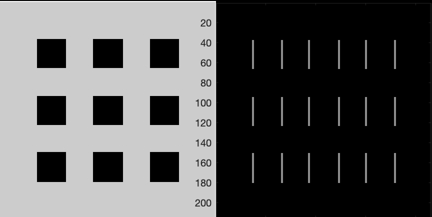
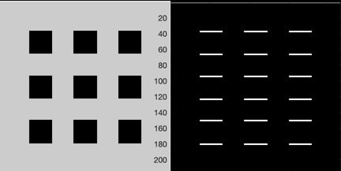
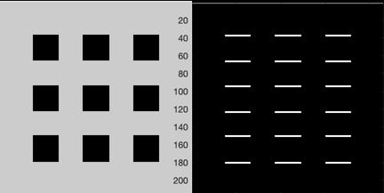
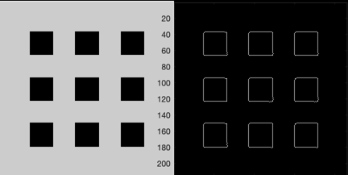

Demonstrates image processing.
------------------------------------------------------------------------ See also CannyEnhancer, GaussianDerivative, HysteresisThreshold, NonMaxSuppression, ColorMapGrayScale, Imager, ReadImage ------------------------------------------------------------------------
Contents
------------------------------------------------------------------------- Copyright (c) 2009 Princeton Satellite Systems, Inc. All rights reserved. ------------------------------------------------------------------------- Since version 8. -------------------------------------------------------------------------
Load the image
%--------------- q = ReadImage('CalibrationPattern.jpg');
Show the derivatives
%--------------------- [dX, dY] = GaussianDerivative( q, 0.05, 0.01 ); Imager(q,[],dX,1); set(gcf,'name','|X Derivative|'); ColorMapGrayScale; Imager(q,[],dY,1); set(gcf,'name','|Y Derivative|'); ColorMapGrayScale;
Compute edge strength and direction. This takes the image derivative internally
%--------------------------------------------------------------------- sigma = 0.05; eps = 0.01; thresh = 0.01; [eS, eO] = CannyEnhancer( q, sigma, eps, thresh ); Imager(q, [], eS, 1); set(gcf,'name','Canny Enhancer : Strength'); Imager(q, [], 256*eO, 1); set(gcf,'name','Canny Enhancer : Direction');
 
 Thin the edges
%--------------- [iN, e0K] = NonMaxSuppression( eO, eS ); Imager(q, [], iN, 1); set(gcf,'name','Non-Maximum Suppression');
This finds the curves
%---------------------- tauH = 0.9*max(max(iN)); tauL = 0.01*tauH; HysteresisThreshold( iN, e0K, tauH, tauL ) %-------------------------------------- % $Id: cef2f83e48e75cef773be80bdd5d9f4023d3a329 $
ans =
1×36 cell array
Columns 1 through 4
{2×27 double} {2×2 double} {2×30 double} {2×2 double}
Columns 5 through 8
{2×29 double} {2×2 double} {2×2 double} {2×3 double}
Columns 9 through 12
{2×2 double} {2×2 double} {2×2 double} {2×2 double}
Columns 13 through 16
{2×27 double} {2×2 double} {2×30 double} {2×2 double}
Columns 17 through 20
{2×2 double} {2×2 double} {2×2 double} {2×2 double}
Columns 21 through 24
{2×2 double} {2×2 double} {2×2 double} {2×2 double}
Columns 25 through 28
{2×27 double} {2×2 double} {2×30 double} {2×2 double}
Columns 29 through 32
{2×2 double} {2×2 double} {2×2 double} {2×3 double}
Columns 33 through 36
{2×2 double} {2×2 double} {2×2 double} {2×2 double}